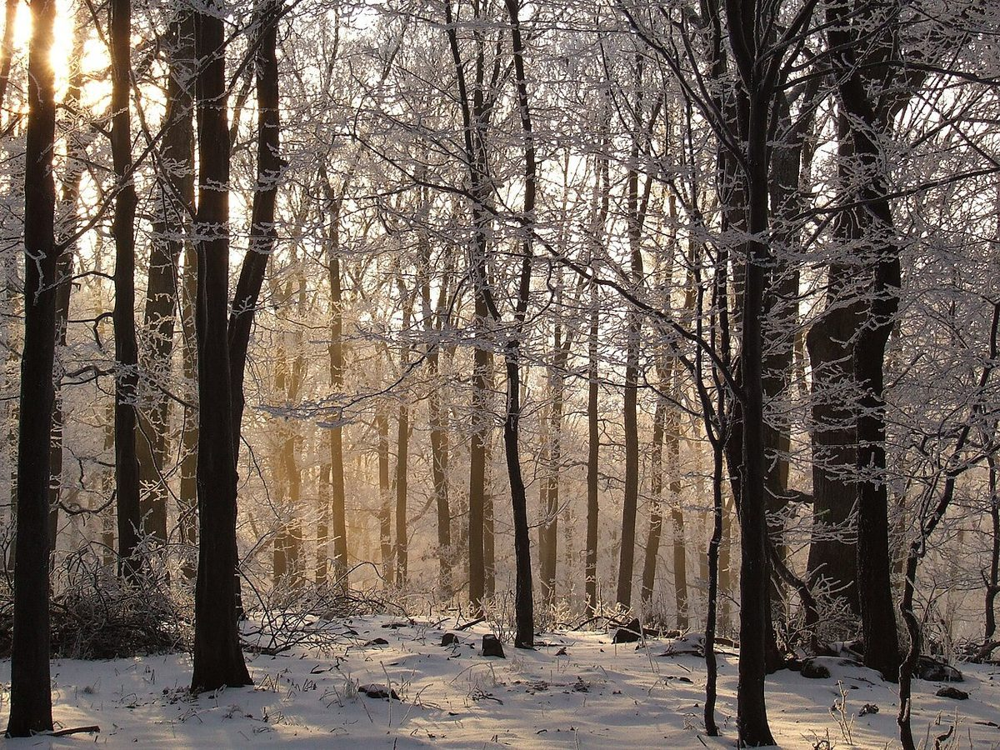
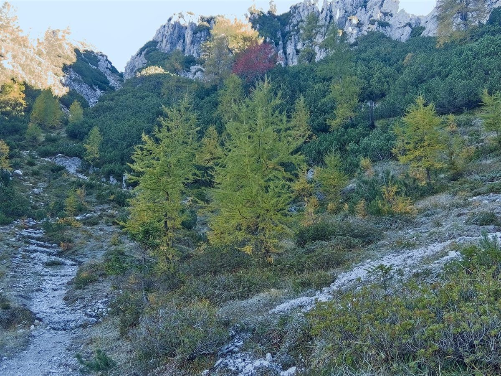

ベーカリー / 三重県四日市市
Eichebakery
三重県四日市市まきの木台にあるベーカリー「Eiche bakery」のご案内ページです。営業時間やメニューなど、詳しいことは準備中。まずはInstagramをのぞいてみてください。
四つのコースをたどると各ページへ(案内図は制作側のイメージ)
制作側の連想
つづりから、ゲレンデの案内板を思った
店名の由来は分かりません。制作側は「Eiche」というつづりを見て、ドイツ語で樫(オーク)を指す語に似ていることから、ドイツ語圏の山の案内板を連想しました。そこで、スキー場のコースを難易度ごとに色と形で示す標識(緑の丸・青の四角・赤のひし形・黒の二重ひし形)を、このサイトの案内役にしています。パンやお店の考え、地域とは関係のない、制作側だけの連想です。
コース案内
四つのコースで、確認できたことを案内します。
- 緑コース / 店のこといちばんやさしい入口。確認できている事実だけをまとめました。

国外のイメージ(ドイツ) - 青コース / メニューメニューと価格は準備中。写真はフリー素材のイメージです。

国外のイメージ(ドイツ) - 赤コース / 口コミ制作側が想像で書いた「イメージ例」です。

国外のイメージ(ブラジル) - 黒コース / アクセス所在地・電話・地図。ここが目的地です。

国外のイメージ(欧州アルプス)
ご案内
お店のこと(確認できたものだけ)
| 所在地 | 〒512-1306 三重県四日市市まきの木台１丁目３４ |
|---|---|
| 電話 | 059-329-7352 |
| 営業時間 | 準備中 |
| 定休日 | 準備中 |
| ご予約 | 準備中 |
| 駐車場 | 準備中 |
| SNS | Instagram @eiche_bakery |